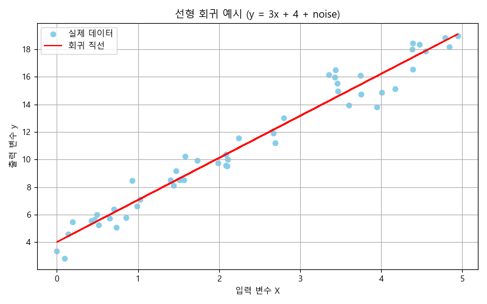

기계학습 회귀(Regression)란 무엇인가?¶
- 회귀(Regression)는 연속적인 수치 데이터를 예측하는 머신러닝 문제
- 예측하고자 하는 목표값(Target)이 실수일 때 사용
예
- 중고차 데이터에서 가격 을 예측하고자 할때
- 기상, 미세먼지 데이터에서 평균기온 이나 미세먼지 농도 를 예측하고자 할 때
- 주택의 면적과 위치로 집값 을 예측하고자 할 때
- 체중, 키, 나이로 혈압 을 예측하고자 할 때
분류(Classification)와 회귀(Regression)의 차이¶
| 항목 | 분류 (Classification) | 회귀 (Regression) |
|---|---|---|
| 예측값 | 범주형 (class) | 연속형 (숫자) |
| 예시 | '암 여부', '품종', '주의보', '경보' 등 | 기온, 미세먼지농도, 중고차가격, 혈압 등 |
| 목적 | 어떤 클래스(그룹)에 속하는가? | 수치를 얼마나 잘예측하는가? |
| 모델 평가 | 정확도, 정밀도, 재현율,F1-score 등 | MAE, RMSE, R² 등 |
| 예측 결과 | 클래스 이름 (또는 확률) | 실수(float) |
import pandas as pd
import matplotlib.pyplot as plt
import seaborn as sns
plt.rc('font', family='Malgun Gothic')
plt.rc('axes', unicode_minus=False)
중고차 관련 캐글에 있는 'car.csv' 파일을 읽어 df에 지정¶
df=pd.read_csv('car.csv')
df.head()
| model | year | price | transmission | mileage | fuelType | tax | mpg | engineSize | |
|---|---|---|---|---|---|---|---|---|---|
| 0 | Fiesta | 2018 | 10600 | Manual | 27380 | Petrol | 145 | 56.5 | 1.0 |
| 1 | Fiesta | 2018 | 11000 | Manual | 7724 | Petrol | 145 | 65.7 | 1.0 |
| 2 | Fiesta | 2014 | 7291 | Manual | 23894 | Petrol | 30 | 54.3 | 1.2 |
| 3 | Fiesta | 2014 | 6998 | Manual | 20325 | Petrol | 30 | 54.3 | 1.2 |
| 4 | Fiesta | 2018 | 11800 | Manual | 34671 | Petrol | 145 | 65.7 | 1.0 |
| 열 이름 | 설명 |
|---|---|
| model | 차량 모델명 |
| year | 연식 |
| price | 판매 가격 (예측 대상) |
| transmission | 변속기 종류 |
| mileage | 주행거리 (mile) |
| fuelType | 연료 종류 |
| tax | 세금 (유로) |
| mpg | 연비 (mile per gallon) |
| engineSize | 엔진 크기 (리터) |
df.info()
<class 'pandas.DataFrame'> RangeIndex: 1372 entries, 0 to 1371 Data columns (total 9 columns): # Column Non-Null Count Dtype --- ------ -------------- ----- 0 model 1372 non-null str 1 year 1372 non-null int64 2 price 1372 non-null int64 3 transmission 1372 non-null str 4 mileage 1372 non-null int64 5 fuelType 1372 non-null str 6 tax 1372 non-null int64 7 mpg 1372 non-null float64 8 engineSize 1372 non-null float64 dtypes: float64(2), int64(4), str(3) memory usage: 96.6 KB
df.describe(include='all')
| model | year | price | transmission | mileage | fuelType | tax | mpg | engineSize | |
|---|---|---|---|---|---|---|---|---|---|
| count | 1372 | 1372.000000 | 1372.000000 | 1372 | 1372.000000 | 1372 | 1372.00000 | 1372.000000 | 1372.000000 |
| unique | 1 | NaN | NaN | 3 | NaN | 2 | NaN | NaN | NaN |
| top | Fiesta | NaN | NaN | Manual | NaN | Petrol | NaN | NaN | NaN |
| freq | 1372 | NaN | NaN | 1270 | NaN | 1299 | NaN | NaN | NaN |
| mean | NaN | 2016.870262 | 10246.741254 | NaN | 21615.703353 | NaN | 101.62172 | 60.831050 | 1.093659 |
| std | NaN | 2.286373 | 2871.141723 | NaN | 16195.652603 | NaN | 64.20709 | 7.603176 | 0.183083 |
| min | NaN | 2004.000000 | 1295.000000 | NaN | 5.000000 | NaN | 0.00000 | 40.300000 | 0.000000 |
| 25% | NaN | 2016.000000 | 8399.750000 | NaN | 10235.250000 | NaN | 20.00000 | 54.300000 | 1.000000 |
| 50% | NaN | 2017.000000 | 9998.000000 | NaN | 17611.500000 | NaN | 145.00000 | 62.800000 | 1.000000 |
| 75% | NaN | 2018.000000 | 11888.250000 | NaN | 28849.250000 | NaN | 145.00000 | 65.700000 | 1.200000 |
| max | NaN | 2060.000000 | 19999.000000 | NaN | 119000.000000 | NaN | 205.00000 | 88.300000 | 1.600000 |
df['model'].unique()
<StringArray> [' Fiesta'] Length: 1, dtype: str
'transmission' 열에 value_counts() 적용¶
df['transmission'].value_counts().plot(kind='bar')
<Axes: xlabel='transmission'>
![No description has been provided for this image]()
'fuelType' 열에 value_counts() 적용¶
df['fuelType'].value_counts()
fuelType Petrol 1299 Diesel 73 Name: count, dtype: int64
sns.countplot(data=df, x='fuelType')
<Axes: xlabel='fuelType', ylabel='count'>
![No description has been provided for this image]()
기계학습에서 X (특성)는 숫자 데이터로만 가능합니다!¶
수치형 변수들 간 상관관계¶
df.columns
Index(['model', 'year', 'price', 'transmission', 'mileage', 'fuelType', 'tax',
'mpg', 'engineSize'],
dtype='str')
corr= df[['price', 'year', 'mileage', 'tax', 'mpg', 'engineSize']].corr().round(2)
corr
| price | year | mileage | tax | mpg | engineSize | |
|---|---|---|---|---|---|---|
| price | 1.00 | 0.68 | -0.71 | 0.46 | -0.18 | -0.21 |
| year | 0.68 | 1.00 | -0.60 | 0.43 | 0.00 | -0.25 |
| mileage | -0.71 | -0.60 | 1.00 | -0.33 | 0.04 | 0.29 |
| tax | 0.46 | 0.43 | -0.33 | 1.00 | -0.38 | 0.04 |
| mpg | -0.18 | 0.00 | 0.04 | -0.38 | 1.00 | -0.18 |
| engineSize | -0.21 | -0.25 | 0.29 | 0.04 | -0.18 | 1.00 |
sns.heatmap(corr, annot=True)
plt.title('자동차 수치형 변수 간 상관관계')
plt.show()
![No description has been provided for this image]()
X (특성) , y (예측할 대상, 타겟) 지정¶
# df[['price', 'year', 'mileage', 'tax', 'mpg', 'engineSize']]
X = df[['year', 'mileage', 'tax', 'mpg', 'engineSize']]
y = df['price']
학습/테스트 분할¶
from sklearn.model_selection import train_test_split
X_train, X_test, y_train, y_test =train_test_split(X, y,test_size=0.2, random_state=0)
선형 회귀모델 학습¶

참고: 선형 회귀 수식¶
선형 회귀는 다음과 같은 수식으로 구성됨
$$ \hat{y} = w_1 x_1 + w_2 x_2 + \cdots + w_n x_n + b $$
예를 들어 자동차 가격 예측에서는 다음과 같이 해석할 수 있음
$$ \text{예측 가격} = w_1 \cdot \text{연식} + w_2 \cdot \text{주행거리} + w_3 \cdot \text{연비} + w_4 \cdot \text{엔진크기} + b $$
- $ \hat{y} $: 예측된 가격
- $ x_i $: 입력 변수 (연식, 주행거리 등)
- $ w_i $: 각 변수의 가중치 (기울기)
- $ b $: 절편 (bias)
from sklearn.linear_model import LinearRegression
lr = LinearRegression()
lr
LinearRegression()In a Jupyter environment, please rerun this cell to show the HTML representation or trust the notebook.
On GitHub, the HTML representation is unable to render, please try loading this page with nbviewer.org.
Parameters
lr.fit(X_train, y_train)
LinearRegression()In a Jupyter environment, please rerun this cell to show the HTML representation or trust the notebook.
On GitHub, the HTML representation is unable to render, please try loading this page with nbviewer.org.
Parameters
y_pred = lr.predict(X_test)
y_pred
array([12130.21577263, 7408.67624807, 7480.68613245, 10413.67106174,
13014.46997988, 9911.89571032, 9755.79841017, 10906.38622628,
10781.68936867, 7484.63407081, 13264.24997805, 13124.05202505,
10664.01486799, 10619.87785547, 7707.3833193 , 10090.95571152,
6602.41034254, 10501.48357334, 10057.88698005, 12061.83066295,
11950.67912053, 11534.54570344, 9042.77782673, 11860.99071523,
11940.43854016, 11137.23986989, 8728.81279402, 8741.77918374,
10733.17515918, 10657.85009613, 8283.81918297, 10244.97125213,
13027.36912361, 11938.17212182, 13646.1980799 , 9598.10589974,
11325.11383974, 2040.60179143, 11160.67552336, 7789.45844289,
7681.18037144, 11576.95857558, 13486.33407674, 8346.00065068,
7283.42566006, 8753.79202945, 12138.63233481, 12657.42854 ,
9479.29997559, 10511.95254505, 6289.59478165, 11919.23210409,
10362.77532806, 12760.81790017, 9885.76003201, -1624.02179836,
9438.07908368, 12167.62103996, 10213.56376092, 12715.84705324,
10809.11679946, 12566.90690885, 11989.30203076, 9984.66053325,
5551.24773896, 9593.30284889, 10851.01844961, 9186.68453689,
10801.60790575, 11009.10259847, 9363.34982727, 11761.31221416,
7932.30393913, 8995.00720168, 12758.61239753, 13509.02578849,
8054.35345703, 11819.30605707, 9905.130193 , 13282.27370162,
7063.50018271, 5066.85281267, 8470.85137853, 12023.97698544,
10633.40168595, 11868.98027698, 12205.9866253 , 12394.6278847 ,
11853.21185865, 13602.43176046, 11666.23215383, 9175.47393917,
11569.0371053 , 12129.44652062, 12142.71436921, 10454.50273945,
11160.17371722, 8336.53498435, 13237.28087334, 10343.96757873,
11365.16363351, 13414.60628625, 11291.64888206, 9709.47195621,
12927.43162522, 12495.6136763 , 9918.35932421, 9506.93221876,
10161.66834174, 9821.46711198, 10627.03427099, 11615.91154707,
11571.27173306, 8033.79203454, 9295.72062649, 5805.87851726,
12267.21128312, 9458.51083753, 9433.74113395, 12079.53717471,
11852.47721389, 12287.51005072, 12427.78608699, 12198.46393159,
9164.72129554, 12822.62357769, 11128.36681595, 11433.56036076,
10586.19718292, 9802.23162762, 10661.79366871, 11311.43003305,
5203.5020694 , 13579.12842183, 11695.20302263, 9279.31961675,
11420.94398675, 10788.85479768, 9264.67299518, 11806.77752913,
7561.5511416 , 11063.80157137, 9930.49493534, 12871.72038385,
12128.8330991 , 8427.81544472, 12498.74925828, 9261.79432549,
11933.01216177, 4846.11916305, 10138.43231544, 9382.31118727,
10358.46933611, 10469.78721885, 10866.57544097, 9303.59157633,
9195.19509957, 7761.8215548 , 12519.71004812, 8935.59043196,
11633.00621084, 11616.33206635, 8611.39924273, 9755.79841017,
11910.23793471, 12920.09921352, 10527.12195965, 12694.47748625,
12788.98090707, 11468.45093576, 12879.57410739, 10558.85951212,
11782.0916498 , 4565.94877619, 11952.73332216, 6073.0745939 ,
13352.06688993, 9483.39244871, 13582.05047754, 7375.90890961,
11929.24428455, 4008.21133996, 11006.53594244, 5866.29121337,
11420.20134891, 6466.24858685, 12535.39901286, 11886.21798483,
7545.77791956, 6538.53200319, 10527.37621984, 12278.02249569,
9844.25482834, 8857.58958205, 9990.68989388, 1766.97847144,
10565.8216426 , 11356.64842592, 8443.80489444, 10974.22994568,
11014.62244336, 11089.80155658, 10191.11385252, 8725.40101834,
10204.51669562, 10067.25836402, 11844.24522494, 10428.19281066,
10476.20426742, 11069.24183959, 12290.32852596, 9823.52057901,
10346.1668445 , 11506.34500816, 4302.76237327, 11769.30177591,
10014.20773043, 11711.71149609, 8544.25364864, 8107.01653701,
10389.27713542, 12619.65947976, 10146.65055433, 8636.29458601,
7649.35317984, 9924.55733922, 8962.82622865, 11929.71695952,
9128.41730421, 9033.52563804, 8497.43410689, 9969.47771521,
9978.99659588, 7267.39552719, 11448.87261869, 9918.40073494,
10299.54500148, 10456.83821656, 10720.89179714, 10749.72035084,
10485.78178661, 12563.27794122, 9196.66889006, 12212.77032095,
12824.84978496, 12612.62039361, 11580.17667289, 7535.37580903,
10849.09097796, 11509.54930545, 2370.66305325, 10128.8265564 ,
13471.86003429, 11169.67740235, 8623.86479795, 9078.4301856 ,
11988.72783605, 9918.34783902, 10365.72228447, 11464.99070288,
10368.34875704, 11606.21358813, 9713.64921407, 12669.5827158 ,
9034.17235713, 11769.81470415, 10530.04826359, 12613.39310317,
12964.13222495, 10120.43358917, 12395.0349556 , 11077.98846303,
10545.02204051, 11278.09481725, 7359.88945322])
회귀 모델 평가 지표¶
분류 모델은 "정확도(Accuracy)"로 평가했습니다.
회귀 모델은 예측값과 실제값의 차이(오차) 로 평가합니다.
세 가지 주요 지표¶
① MAE (Mean Absolute Error, 평균 절대 오차)
$$\text{MAE} = \frac{1}{n}\sum|y_i - \hat{y}_i|$$
- 오차의 절댓값 평균
- 단위가 원래 데이터와 같음 → 해석이 직관적
- 예: MAE = £2,000 → "평균적으로 실제 가격과 £2,000 차이"
② RMSE (Root Mean Squared Error, 평균 제곱근 오차)
$$\text{RMSE} = \sqrt{\frac{1}{n}\sum(y_i - \hat{y}_i)^2}$$
- 오차를 제곱한 뒤 평균 → 루트
- 큰 오차에 더 민감 (제곱 때문)
- 보통 MAE보다 값이 큼
③ R² (결정 계수, R-squared)
$$R^2 = 1 - \frac{\sum(y_i - \hat{y}_i)^2}{\sum(y_i - \bar{y})^2}$$
- 0 ~ 1 사이 값 (1에 가까울수록 좋음)
- "이 모델이 가격 변동의 몇 %를 설명하는가" 를 나타냄
- 예: R² = 0.85 → 가격 변동의 85%를 이 모델이 설명
| 지표 | 작을수록? 클수록? | 단위 | 직관 |
|---|---|---|---|
| MAE | 작을수록 좋음 | 원래 단위(£) | 평균 오차 |
| RMSE | 작을수록 좋음 | 원래 단위(£) | 큰 오차에 민감 |
| R² | 클수록 좋음 | 없음 (0~1) | 설명력 |
성능 평가 및 해석¶
from sklearn.metrics import mean_absolute_error, root_mean_squared_error, r2_score
mae = mean_absolute_error(y_test, y_pred)
rmse = root_mean_squared_error(y_test, y_pred)
r2 = r2_score(y_test, y_pred)
print(f'평균절대오차 (MAE): {mae:.2f}')
print(f'평균제곱근오차 (RMSE): {rmse:.2f}')
print(f'R2 Score: {r2:.2f}')
평균절대오차 (MAE): 1193.15 평균제곱근오차 (RMSE): 1580.91 결정계수 (R²): 0.69
실제값 vs 예측값 시각화¶
y_pred
array([12130.21577263, 7408.67624807, 7480.68613245, 10413.67106174,
13014.46997988, 9911.89571032, 9755.79841017, 10906.38622628,
10781.68936867, 7484.63407081, 13264.24997805, 13124.05202505,
10664.01486799, 10619.87785547, 7707.3833193 , 10090.95571152,
6602.41034254, 10501.48357334, 10057.88698005, 12061.83066295,
11950.67912053, 11534.54570344, 9042.77782673, 11860.99071523,
11940.43854016, 11137.23986989, 8728.81279402, 8741.77918374,
10733.17515918, 10657.85009613, 8283.81918297, 10244.97125213,
13027.36912361, 11938.17212182, 13646.1980799 , 9598.10589974,
11325.11383974, 2040.60179143, 11160.67552336, 7789.45844289,
7681.18037144, 11576.95857558, 13486.33407674, 8346.00065068,
7283.42566006, 8753.79202945, 12138.63233481, 12657.42854 ,
9479.29997559, 10511.95254505, 6289.59478165, 11919.23210409,
10362.77532806, 12760.81790017, 9885.76003201, -1624.02179836,
9438.07908368, 12167.62103996, 10213.56376092, 12715.84705324,
10809.11679946, 12566.90690885, 11989.30203076, 9984.66053325,
5551.24773896, 9593.30284889, 10851.01844961, 9186.68453689,
10801.60790575, 11009.10259847, 9363.34982727, 11761.31221416,
7932.30393913, 8995.00720168, 12758.61239753, 13509.02578849,
8054.35345703, 11819.30605707, 9905.130193 , 13282.27370162,
7063.50018271, 5066.85281267, 8470.85137853, 12023.97698544,
10633.40168595, 11868.98027698, 12205.9866253 , 12394.6278847 ,
11853.21185865, 13602.43176046, 11666.23215383, 9175.47393917,
11569.0371053 , 12129.44652062, 12142.71436921, 10454.50273945,
11160.17371722, 8336.53498435, 13237.28087334, 10343.96757873,
11365.16363351, 13414.60628625, 11291.64888206, 9709.47195621,
12927.43162522, 12495.6136763 , 9918.35932421, 9506.93221876,
10161.66834174, 9821.46711198, 10627.03427099, 11615.91154707,
11571.27173306, 8033.79203454, 9295.72062649, 5805.87851726,
12267.21128312, 9458.51083753, 9433.74113395, 12079.53717471,
11852.47721389, 12287.51005072, 12427.78608699, 12198.46393159,
9164.72129554, 12822.62357769, 11128.36681595, 11433.56036076,
10586.19718292, 9802.23162762, 10661.79366871, 11311.43003305,
5203.5020694 , 13579.12842183, 11695.20302263, 9279.31961675,
11420.94398675, 10788.85479768, 9264.67299518, 11806.77752913,
7561.5511416 , 11063.80157137, 9930.49493534, 12871.72038385,
12128.8330991 , 8427.81544472, 12498.74925828, 9261.79432549,
11933.01216177, 4846.11916305, 10138.43231544, 9382.31118727,
10358.46933611, 10469.78721885, 10866.57544097, 9303.59157633,
9195.19509957, 7761.8215548 , 12519.71004812, 8935.59043196,
11633.00621084, 11616.33206635, 8611.39924273, 9755.79841017,
11910.23793471, 12920.09921352, 10527.12195965, 12694.47748625,
12788.98090707, 11468.45093576, 12879.57410739, 10558.85951212,
11782.0916498 , 4565.94877619, 11952.73332216, 6073.0745939 ,
13352.06688993, 9483.39244871, 13582.05047754, 7375.90890961,
11929.24428455, 4008.21133996, 11006.53594244, 5866.29121337,
11420.20134891, 6466.24858685, 12535.39901286, 11886.21798483,
7545.77791956, 6538.53200319, 10527.37621984, 12278.02249569,
9844.25482834, 8857.58958205, 9990.68989388, 1766.97847144,
10565.8216426 , 11356.64842592, 8443.80489444, 10974.22994568,
11014.62244336, 11089.80155658, 10191.11385252, 8725.40101834,
10204.51669562, 10067.25836402, 11844.24522494, 10428.19281066,
10476.20426742, 11069.24183959, 12290.32852596, 9823.52057901,
10346.1668445 , 11506.34500816, 4302.76237327, 11769.30177591,
10014.20773043, 11711.71149609, 8544.25364864, 8107.01653701,
10389.27713542, 12619.65947976, 10146.65055433, 8636.29458601,
7649.35317984, 9924.55733922, 8962.82622865, 11929.71695952,
9128.41730421, 9033.52563804, 8497.43410689, 9969.47771521,
9978.99659588, 7267.39552719, 11448.87261869, 9918.40073494,
10299.54500148, 10456.83821656, 10720.89179714, 10749.72035084,
10485.78178661, 12563.27794122, 9196.66889006, 12212.77032095,
12824.84978496, 12612.62039361, 11580.17667289, 7535.37580903,
10849.09097796, 11509.54930545, 2370.66305325, 10128.8265564 ,
13471.86003429, 11169.67740235, 8623.86479795, 9078.4301856 ,
11988.72783605, 9918.34783902, 10365.72228447, 11464.99070288,
10368.34875704, 11606.21358813, 9713.64921407, 12669.5827158 ,
9034.17235713, 11769.81470415, 10530.04826359, 12613.39310317,
12964.13222495, 10120.43358917, 12395.0349556 , 11077.98846303,
10545.02204051, 11278.09481725, 7359.88945322])
y_test
1023 10597
642 5499
1196 7980
31 10495
253 15999
...
1342 12400
251 10795
1256 8750
966 7599
1096 6498
Name: price, Length: 275, dtype: int64
y_test.values
array([10597, 5499, 7980, 10495, 15999, 12500, 9795, 12000, 9999,
6000, 16690, 16491, 8250, 10990, 7500, 11287, 6500, 10000,
8510, 11998, 12600, 11479, 7790, 12495, 11200, 8491, 8998,
7499, 7485, 11500, 7999, 11295, 16299, 11900, 13750, 8600,
9600, 2998, 7295, 7250, 7999, 11291, 13199, 9495, 4999,
6250, 10900, 12750, 9250, 9851, 5995, 11260, 9750, 13998,
9100, 1295, 9680, 13299, 8500, 13998, 12391, 11170, 11885,
11200, 5998, 6991, 11998, 10250, 10750, 9995, 8998, 11200,
6897, 8250, 9998, 14000, 8240, 12500, 9900, 12299, 7749,
5600, 7000, 12000, 12000, 11250, 14299, 12999, 10450, 14290,
9600, 7960, 12495, 10298, 11440, 10998, 10950, 8000, 17500,
8990, 10495, 19000, 12450, 11800, 15695, 14999, 10299, 10298,
8189, 11150, 9741, 10497, 8998, 7739, 10500, 5490, 13100,
9710, 9000, 8497, 10990, 12489, 11498, 12500, 8991, 15500,
12495, 10475, 8997, 7499, 7490, 10971, 5500, 18299, 12290,
10300, 10695, 9500, 8400, 11700, 7000, 10495, 9046, 16000,
11298, 5490, 14899, 9490, 11000, 5850, 11499, 8999, 10770,
10000, 7995, 7698, 8669, 7691, 13800, 9500, 14296, 12495,
7750, 10195, 11900, 12995, 9499, 15200, 15890, 11300, 10991,
11600, 12000, 4500, 11000, 7000, 17515, 7298, 16991, 7291,
12599, 5698, 9750, 5995, 12000, 7399, 13000, 9791, 6595,
7490, 8000, 12700, 8900, 7460, 9991, 2995, 10900, 11000,
7999, 11799, 11999, 10500, 9995, 7500, 9990, 12377, 9590,
7495, 9989, 10298, 12000, 7791, 8900, 11250, 4045, 11295,
7800, 9600, 8810, 7995, 11499, 16500, 7999, 6999, 6700,
10790, 7560, 10200, 5999, 8800, 8295, 11500, 8998, 6890,
9290, 11300, 9950, 13000, 9491, 7591, 10490, 17250, 8400,
10291, 13800, 16499, 9499, 7298, 9880, 10187, 2799, 8795,
15500, 10995, 9195, 9000, 11695, 8750, 10900, 10040, 10300,
11995, 9190, 13949, 8299, 11830, 12995, 11495, 13775, 8650,
12400, 10795, 8750, 7599, 6498])
plt.figure(figsize=(10,5))
plt.plot(y_test.values[:30], label='실제값', marker='o')
plt.plot(y_pred[:30], label='예측값', marker='^')
plt.title('자동차 가격 예측 (샘플 30개)')
plt.ylabel('가격 (유로)')
plt.legend()
plt.grid()
plt.show()
![No description has been provided for this image]()
회귀 모델 비교¶
| 모델 | 특징 |
|---|---|
| LinearRegression | 기본 선형 회귀 |
| KNeighborsRegressor | 가까운 k개 이웃 값의 평균으로 예측 |
| DecisionTreeRegressor | 분기를 반복해 리프 노드 데이터의 평균으로 예측 |
| RandomForestRegressor | 여러 결정 트리의 평균 → 비선형 관계도 포착 |
분류에서 이미 배운 모델 — 회귀에서는 어떻게 다를까?¶
KNN 분류 vs KNN 회귀
분류 KNN: 이웃 3명 → [고급차, 고급차, 저가차] → 다수결 → "고급차"
회귀 KNN: 이웃 3명 → [£15000, £18000, £12000] → 평균 → £15000
결정 트리 분류 vs 결정 트리 회귀
분류 DT: 리프 노드 도달 → 가장 많은 클래스 → "고급차"
회귀 DT: 리프 노드 도달 → 데이터들의 평균 → £22,500
랜덤 포레스트 분류 vs 랜덤 포레스트 회귀
분류 RF: 여러 결정트리들이 각각 클래스 예측 → 투표(voting) → 가장 많이 나온 클래스 선택 → "고급차"
회귀 RF: 여러 결정트리들이 각각 숫자 예측 → 평균값 계산 → £23,100
핵심: 알고리즘 구조는 같고, 마지막 출력 단계만 다수결 → 평균으로 바뀝니다!
DecisionTreeRegressor의 주의점: max_depth
깊이 제한 없이 학습하면 훈련 데이터에만 딱 맞는 과적합(Overfitting) 발생
max_depth 로 나무 깊이를 제한해 과적합을 막을 수 있습니다.
from sklearn.neighbors import KNeighborsRegressor
from sklearn.preprocessing import StandardScaler
X_train
| year | mileage | tax | mpg | engineSize | |
|---|---|---|---|---|---|
| 1326 | 2018 | 21191 | 145 | 65.7 | 1.0 |
| 1109 | 2016 | 21832 | 20 | 62.8 | 1.0 |
| 1139 | 2018 | 16035 | 145 | 65.7 | 1.0 |
| 657 | 2017 | 6273 | 0 | 57.7 | 1.0 |
| 704 | 2018 | 22727 | 145 | 56.5 | 1.0 |
| ... | ... | ... | ... | ... | ... |
| 763 | 2017 | 6229 | 145 | 65.7 | 1.0 |
| 835 | 2014 | 46321 | 30 | 54.3 | 1.2 |
| 1216 | 2019 | 12362 | 145 | 60.1 | 1.0 |
| 559 | 2016 | 19764 | 0 | 65.7 | 1.0 |
| 684 | 2017 | 13534 | 145 | 65.7 | 1.0 |
1097 rows × 5 columns
scaler = StandardScaler()
X_train_scaled = scaler.fit_transform(X_train)
X_train_scaled
array([[ 0.47871979, -0.03129896, 0.67881171, 0.61846289, -0.53157503],
[-0.3744981 , 0.00856467, -1.27177621, 0.24251639, -0.53157503],
[ 0.47871979, -0.35194933, 0.67881171, 0.61846289, -0.53157503],
...,
[ 0.90532874, -0.5803723 , 0.67881171, -0.10750276, -0.53157503],
[-0.3744981 , -0.12004374, -1.58387028, 0.61846289, -0.53157503],
[ 0.05211085, -0.50748591, 0.67881171, 0.61846289, -0.53157503]],
shape=(1097, 5))
X_test_scaled = scaler.transform(X_test)
X_test_scaled
array([[ 4.78719793e-01, -9.98225250e-01, 6.78811710e-01,
4.24007802e-01, 1.45770117e-03],
[-2.50754283e+00, 8.32952040e-01, 6.78811710e-01,
-1.58536139e+00, 1.60055588e+00],
[-3.74498100e-01, 1.29838016e+00, -1.58387028e+00,
6.18462886e-01, -5.31575026e-01],
...,
[ 4.78719793e-01, 1.77285470e-01, 6.78811710e-01,
6.18462886e-01, -5.31575026e-01],
[ 5.21108467e-02, -4.64450596e-01, 3.66717642e-01,
-8.59395747e-01, 5.34490428e-01],
[-8.01107046e-01, 1.08662404e+00, -1.58387028e+00,
6.18462886e-01, -5.31575026e-01]], shape=(275, 5))
knn = KNeighborsRegressor(n_neighbors=5)
knn
KNeighborsRegressor()In a Jupyter environment, please rerun this cell to show the HTML representation or trust the notebook.
On GitHub, the HTML representation is unable to render, please try loading this page with nbviewer.org.
Parameters
knn.fit(X_train_scaled, y_train)
KNeighborsRegressor()In a Jupyter environment, please rerun this cell to show the HTML representation or trust the notebook.
On GitHub, the HTML representation is unable to render, please try loading this page with nbviewer.org.
Parameters
y_pred =knn.predict(X_test_scaled)
y_pred
array([10454.6, 6209.2, 7703. , 10465.6, 15502.6, 10949.6, 9948.4,
10714.8, 11330. , 6278.6, 18383. , 14969. , 10068. , 10732. ,
9236.6, 12182.8, 7197.2, 9948.4, 9649.6, 11956.2, 12311.8,
10935.6, 8964.4, 11502. , 11797.8, 9499.2, 9116. , 7877. ,
8047.8, 10758.8, 7737.8, 11922. , 15956.8, 12894. , 14798. ,
8791.8, 9263. , 3566. , 8810.2, 7729.8, 8375.4, 11247.8,
12809.8, 9510.4, 7370. , 7013. , 10454.6, 13860. , 10614.4,
9548.4, 6182.6, 11735.8, 9343. , 13371.6, 9859.4, 2675. ,
10076.6, 11414.6, 9793.8, 13971.8, 11049.2, 14717.4, 11502. ,
11459. , 6313. , 7428. , 10714.8, 9099.4, 11049.2, 10554. ,
8728. , 12152. , 7757.2, 8876. , 11148. , 12807.8, 8051.2,
10890. , 10481.4, 12869.6, 6993. , 5100.6, 6782.8, 11770. ,
9907.6, 11275.4, 13319.8, 13699.8, 9804.2, 15826.6, 9515.8,
8147.6, 11247.8, 10196.2, 12813.2, 10465.6, 11193.8, 8523.6,
18383. , 9529.2, 12286.2, 18299.4, 12838. , 10776.8, 15424. ,
13783.2, 8999.6, 9337. , 7555. , 10955.6, 9543.8, 10422.4,
8490.6, 8401.4, 9494. , 6794.2, 14205.4, 9874. , 8965.8,
8940. , 11307.8, 14205.4, 13258.6, 11630. , 11343. , 15797.6,
12478. , 11056.6, 10546.4, 7468.2, 7760. , 10563. , 4871.2,
18299.4, 11257.4, 10076.6, 11890.4, 10248.6, 8147.6, 13119.6,
7499. , 10003.4, 10509.2, 15424. , 12456.2, 8807. , 13783.2,
9874. , 11797.8, 7509.2, 10495.6, 7344.8, 10776. , 9907.4,
8584.6, 7344.8, 8147.6, 7399.8, 14575.6, 8964.4, 13282. ,
12390. , 8032.8, 9948.4, 11477.4, 16220.8, 9327.8, 15037.8,
17972. , 10778. , 11287.8, 11537.6, 11451.8, 4677. , 11744.2,
6312.6, 15720.6, 7344.8, 15826.6, 7567.4, 11502. , 6234.2,
10010. , 6553.4, 11890.4, 7315.6, 13263.4, 10084.8, 6278.6,
6978.8, 7781.8, 13319.8, 9859.4, 8776.8, 9752.6, 3566. ,
9266. , 10579.4, 8438.4, 11049.2, 9703.4, 10657.2, 11859.8,
6977.2, 9649.4, 11460. , 11326.6, 7730.4, 10404.8, 10903. ,
13699.8, 7468.2, 8406.4, 11728.8, 3258. , 11337.8, 8137. ,
9816.8, 8936.6, 8217. , 11940. , 17688.6, 7556. , 6814.6,
7060.2, 9894. , 8876. , 9904.4, 7190. , 8776.8, 9156. ,
11059. , 9697.2, 7845.6, 8416.8, 10959. , 10473.8, 10776. ,
10914.8, 8638.6, 9196.8, 15679.4, 9069.4, 11414.6, 13669.8,
14998.2, 11247.8, 8375.4, 10086.6, 9754.4, 3566. , 9454.8,
15987.6, 10632.2, 7977. , 8974.6, 11323.8, 9238.4, 10321.8,
9622.4, 9444.4, 13562. , 10496.6, 16220.8, 8776.8, 11911.2,
11537.6, 10798.2, 15361. , 9649.6, 13539.8, 10904. , 10404.8,
8957.4, 7238.2])
mae = mean_absolute_error(y_test, y_pred)
rmse = root_mean_squared_error(y_test, y_pred)
r2 = r2_score(y_test, y_pred)
print(f'평균절대오차 (MAE): {mae:.2f}')
print(f'평균제곱근오차 (RMSE): {rmse:.2f}')
print(f'R2 Score: {r2:.2f}')
평균절대오차 (MAE): 754.95 평균제곱근오차 (RMSE): 970.77 R2 Score: 0.88
from sklearn.tree import DecisionTreeRegressor
from sklearn.ensemble import RandomForestRegressor
dt = DecisionTreeRegressor(max_depth=3, random_state=0)
dt
DecisionTreeRegressor(max_depth=3, random_state=0)In a Jupyter environment, please rerun this cell to show the HTML representation or trust the notebook.
On GitHub, the HTML representation is unable to render, please try loading this page with nbviewer.org.
Parameters
dt.fit(X_train, y_train )
DecisionTreeRegressor(max_depth=3, random_state=0)In a Jupyter environment, please rerun this cell to show the HTML representation or trust the notebook.
On GitHub, the HTML representation is unable to render, please try loading this page with nbviewer.org.
Parameters
y_pred= dt.predict(X_test)
y_pred
array([11199.32014388, 3516.95238095, 8451.74299065, 11199.32014388,
14342.51219512, 9697.69366197, 8451.74299065, 9697.69366197,
11199.32014388, 6789.25225225, 18351.44444444, 14342.51219512,
9697.69366197, 11199.32014388, 6789.25225225, 9697.69366197,
6789.25225225, 9697.69366197, 8451.74299065, 14342.51219512,
14342.51219512, 11199.32014388, 9697.69366197, 11199.32014388,
11199.32014388, 11199.32014388, 8451.74299065, 6789.25225225,
8451.74299065, 9697.69366197, 6789.25225225, 11199.32014388,
14342.51219512, 11199.32014388, 14342.51219512, 9697.69366197,
11199.32014388, 3516.95238095, 9697.69366197, 8451.74299065,
8451.74299065, 11199.32014388, 14342.51219512, 8451.74299065,
6789.25225225, 8451.74299065, 11199.32014388, 11199.32014388,
9697.69366197, 9697.69366197, 6789.25225225, 11199.32014388,
9697.69366197, 14342.51219512, 8451.74299065, 3516.95238095,
11199.32014388, 11199.32014388, 9697.69366197, 14342.51219512,
9697.69366197, 14342.51219512, 11199.32014388, 11199.32014388,
6789.25225225, 8451.74299065, 9697.69366197, 9697.69366197,
9697.69366197, 11199.32014388, 9697.69366197, 11199.32014388,
6789.25225225, 8451.74299065, 11199.32014388, 14342.51219512,
8451.74299065, 11199.32014388, 11199.32014388, 14342.51219512,
6789.25225225, 6789.25225225, 6789.25225225, 11199.32014388,
9697.69366197, 11199.32014388, 14342.51219512, 14295.4375 ,
11199.32014388, 14342.51219512, 11199.32014388, 8451.74299065,
11199.32014388, 11199.32014388, 9697.69366197, 11199.32014388,
11199.32014388, 8451.74299065, 18351.44444444, 8451.74299065,
9697.69366197, 18351.44444444, 11199.32014388, 11199.32014388,
14342.51219512, 14342.51219512, 8451.74299065, 8451.74299065,
8451.74299065, 9697.69366197, 11199.32014388, 9697.69366197,
9697.69366197, 8451.74299065, 6789.25225225, 8451.74299065,
14342.51219512, 8451.74299065, 8451.74299065, 9697.69366197,
11199.32014388, 14342.51219512, 14342.51219512, 11199.32014388,
9697.69366197, 14342.51219512, 11199.32014388, 11199.32014388,
11199.32014388, 8451.74299065, 8451.74299065, 9697.69366197,
6789.25225225, 18351.44444444, 11199.32014388, 11199.32014388,
9697.69366197, 11199.32014388, 8451.74299065, 14342.51219512,
8451.74299065, 9697.69366197, 9697.69366197, 14342.51219512,
14342.51219512, 3516.95238095, 14342.51219512, 8451.74299065,
11199.32014388, 8451.74299065, 9697.69366197, 8451.74299065,
11199.32014388, 9697.69366197, 9697.69366197, 8451.74299065,
8451.74299065, 8451.74299065, 14342.51219512, 9697.69366197,
11199.32014388, 9697.69366197, 8451.74299065, 8451.74299065,
11199.32014388, 14342.51219512, 9697.69366197, 14342.51219512,
14295.4375 , 11199.32014388, 14342.51219512, 11199.32014388,
11199.32014388, 6789.25225225, 11199.32014388, 6789.25225225,
14342.51219512, 8451.74299065, 14342.51219512, 6789.25225225,
11199.32014388, 6789.25225225, 9697.69366197, 6789.25225225,
9697.69366197, 8451.74299065, 14295.4375 , 11199.32014388,
6789.25225225, 8451.74299065, 8451.74299065, 14342.51219512,
8451.74299065, 9697.69366197, 9697.69366197, 3516.95238095,
9697.69366197, 9697.69366197, 8451.74299065, 9697.69366197,
9697.69366197, 11199.32014388, 11199.32014388, 9697.69366197,
8451.74299065, 11199.32014388, 11199.32014388, 8451.74299065,
11199.32014388, 11199.32014388, 14295.4375 , 8451.74299065,
9697.69366197, 11199.32014388, 3516.95238095, 11199.32014388,
9697.69366197, 11199.32014388, 6789.25225225, 11199.32014388,
11199.32014388, 14295.4375 , 8451.74299065, 6789.25225225,
8451.74299065, 8451.74299065, 8451.74299065, 11199.32014388,
8451.74299065, 9697.69366197, 9697.69366197, 11199.32014388,
9697.69366197, 6789.25225225, 9697.69366197, 11199.32014388,
8451.74299065, 14295.4375 , 9697.69366197, 9697.69366197,
9697.69366197, 14342.51219512, 9697.69366197, 11199.32014388,
14342.51219512, 14342.51219512, 11199.32014388, 8451.74299065,
11199.32014388, 9697.69366197, 3516.95238095, 8451.74299065,
14342.51219512, 11199.32014388, 6789.25225225, 8451.74299065,
11199.32014388, 9697.69366197, 8451.74299065, 11199.32014388,
11199.32014388, 14295.4375 , 8451.74299065, 14342.51219512,
9697.69366197, 11199.32014388, 11199.32014388, 14342.51219512,
14342.51219512, 8451.74299065, 11199.32014388, 11199.32014388,
11199.32014388, 9697.69366197, 8451.74299065])
mae = mean_absolute_error(y_test, y_pred)
rmse = root_mean_squared_error(y_test, y_pred)
r2 = r2_score(y_test, y_pred)
print(f'평균절대오차 (MAE): {mae:.2f}')
print(f'평균제곱근오차 (RMSE): {rmse:.2f}')
print(f'R2 Score: {r2:.2f}')
평균절대오차 (MAE): 1144.21 평균제곱근오차 (RMSE): 1401.92 R2 Score: 0.76
rf= RandomForestRegressor(random_state=0)
rf
RandomForestRegressor(random_state=0)In a Jupyter environment, please rerun this cell to show the HTML representation or trust the notebook.
On GitHub, the HTML representation is unable to render, please try loading this page with nbviewer.org.
Parameters
rf.fit(X_train, y_train)
RandomForestRegressor(random_state=0)In a Jupyter environment, please rerun this cell to show the HTML representation or trust the notebook.
On GitHub, the HTML representation is unable to render, please try loading this page with nbviewer.org.
Parameters
y_pred = rf.predict(X_test)
mae = mean_absolute_error(y_test, y_pred)
rmse = root_mean_squared_error(y_test, y_pred)
r2 = r2_score(y_test, y_pred)
print(f'평균절대오차 (MAE): {mae:.2f}')
print(f'평균제곱근오차 (RMSE): {rmse:.2f}')
print(f'R2 Score: {r2:.2f}')
평균절대오차 (MAE): 751.10 평균제곱근오차 (RMSE): 976.40 R2 Score: 0.88
중고자동차 가격 예측 회귀모델 (범주형 변수 포함 확장)¶
- 자동차 가격을 예측 하기 위한 회귀 모델을 학습
- 수치형 변수뿐 아니라, 문자열로 되어 있는 범주형 변수(
transmission,fuelType)도 함께 사용
비교하는 모델:
- KNN Regressor
- Decision Tree Regressor
- Random Forest Regressor
전 처리 및 범주형 변수 인코딩¶
- car.csv에는
transmission,fuelType처럼 문자열로 된 범주형 변수(categorical variable) 가 있음 - 이러한 변수는 회귀모델이 직접 처리할 수 없기 때문에, 수치형으로 변환해야 해요!!
- One-Hot Encoding (원-핫 인코딩) 이 가장 널리 사용되는 방법
One-Hot Encoding이란?¶
- 각 범주(카타고리)를 0 또는 1로 표시하는 더미(dummy) 변수로 변환
- 예:
transmission이 "Manual", "Automatic", "Semi-Auto" =>transmission_Manual,transmission_Automatic,transmission_Semi-Auto열 생성
df.info()
<class 'pandas.DataFrame'> RangeIndex: 1372 entries, 0 to 1371 Data columns (total 9 columns): # Column Non-Null Count Dtype --- ------ -------------- ----- 0 model 1372 non-null str 1 year 1372 non-null int64 2 price 1372 non-null int64 3 transmission 1372 non-null str 4 mileage 1372 non-null int64 5 fuelType 1372 non-null str 6 tax 1372 non-null int64 7 mpg 1372 non-null float64 8 engineSize 1372 non-null float64 dtypes: float64(2), int64(4), str(3) memory usage: 96.6 KB
X
| year | mileage | tax | mpg | engineSize | |
|---|---|---|---|---|---|
| 0 | 2018 | 27380 | 145 | 56.5 | 1.0 |
| 1 | 2018 | 7724 | 145 | 65.7 | 1.0 |
| 2 | 2014 | 23894 | 30 | 54.3 | 1.2 |
| 3 | 2014 | 20325 | 30 | 54.3 | 1.2 |
| 4 | 2018 | 34671 | 145 | 65.7 | 1.0 |
| ... | ... | ... | ... | ... | ... |
| 1367 | 2014 | 50000 | 0 | 65.7 | 1.0 |
| 1368 | 2016 | 30900 | 0 | 65.7 | 1.0 |
| 1369 | 2018 | 431 | 145 | 48.7 | 1.0 |
| 1370 | 2017 | 31597 | 0 | 57.7 | 1.0 |
| 1371 | 2018 | 9487 | 150 | 65.7 | 1.0 |
1372 rows × 5 columns
df.columns
Index(['model', 'year', 'price', 'transmission', 'mileage', 'fuelType', 'tax',
'mpg', 'engineSize'],
dtype='str')
df['transmission'].value_counts()
transmission Manual 1270 Semi-Auto 62 Automatic 40 Name: count, dtype: int64
df['fuelType'].value_counts()
fuelType Petrol 1299 Diesel 73 Name: count, dtype: int64
X=df[['year', 'mileage', 'tax', 'mpg', 'engineSize', 'transmission', 'fuelType']]
X = pd.get_dummies(X)
y = df['price']
X_train, X_test, y_train, y_test =train_test_split(X, y,test_size=0.2, random_state=0)
rf= RandomForestRegressor(random_state=0)
rf.fit(X_train, y_train)
RandomForestRegressor(random_state=0)In a Jupyter environment, please rerun this cell to show the HTML representation or trust the notebook.
On GitHub, the HTML representation is unable to render, please try loading this page with nbviewer.org.
Parameters
y_pred = rf.predict(X_test)
mae = mean_absolute_error(y_test, y_pred)
rmse = root_mean_squared_error(y_test, y_pred)
r2 = r2_score(y_test, y_pred)
print(f'평균절대오차 (MAE): {mae:.2f}')
print(f'평균제곱근오차 (RMSE): {rmse:.2f}')
print(f'R2 Score: {r2:.2f}')
평균절대오차 (MAE): 747.61 평균제곱근오차 (RMSE): 971.52 R2 Score: 0.88
과제: DecisionTreeRegressor ,KNeighborsRegressor 사용하여 각각 학습하고 성능평가지표를 구해보세요¶